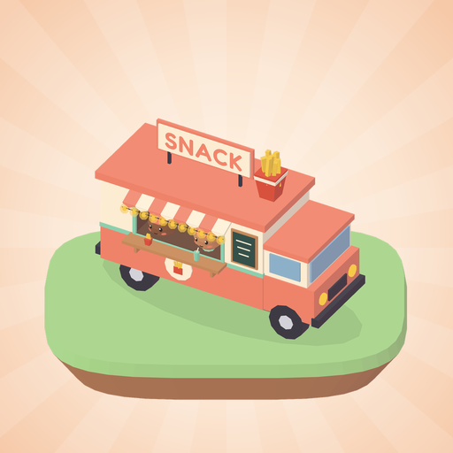

Idle Snack
Du food truck au palace
Idle Snack est un petit jeu de restaurant pour iPhone. Tu commences avec un food truck et quelques frites, tu agrandis ta cuisine, tes tables et ton service, tu embauches un manager… puis tu ouvres un bistrot, une brasserie et enfin un palace. Tes restaurants continuent de tourner même quand tu ne joues pas.
Besoin d'aide ?
Écris-nous, nous répondons dès que possible. Dis-nous le modèle de ton iPhone et ce qui se passe.
idlesnack.contact@gmail.comQuestions fréquentes
Où est enregistrée ma partie ?
Sur ton téléphone. Elle s'enregistre toute seule pendant que tu joues, sans compte à créer. Attention : si tu supprimes le jeu, ta partie est effacée avec lui.
Le jeu est-il gratuit ?
Oui, entièrement, et il n'y a aucun achat dans le jeu.
Les publicités sont-elles obligatoires ?
Non. Le jeu propose seulement des vidéos facultatives, par exemple pour doubler tes gains. Tu peux jouer sans jamais en regarder.
Que se passe-t-il quand je ne joue pas ?
Tes managers continuent de cuisiner pendant ton absence, jusqu'à 2 heures. À ton retour, le jeu te montre ce qu'ils ont gagné.
Comment couper la musique, les sons ou les vibrations ?
Touche la roue dentée, en haut à droite de l'écran du jeu.
Tes données
Nous ne recevons pas les données de ta partie. Tout est expliqué dans la politique de confidentialité.